ระบบติดตามลูกค้าขาดฝาก · เอกสารอธิบายฟีเจอร์ทั้งหมด พร้อมวิธีทดสอบและภาพประกอบ สำหรับส่งงานและนำไปพัฒนาต่อ
เปิด CRM Dashboard.command บน Desktop (หรือเปิดไฟล์ site/index.html)admin/admin1234 (ADMIN) · head1/head1234 (SUPERVISOR) · agent1/agent1234 (AGENT)site/docs/index.html เปิดแยกได้อิสระ · ภาพอยู่ในโฟลเดอร์ docs/shots/🔐 สิทธิ์: AGENT เห็นเฉพาะงานตัวเอง (คิวโทร/ลูกค้า/SMS) · SUPERVISOR เพิ่มหน้ารายงาน/วิเคราะห์/Telegram · ADMIN เพิ่ม Audit Log + จัดการผู้ใช้
admin123รหัสผ่านไม่ถูกเก็บเป็น plaintext — ผ่านการ hash (FNV-1a 32-bit) ก่อนลง localStorage การยืนยัน "รหัสเดิม" จึงเทียบที่ค่า hash ไม่ใช่ตัวอักษรตรงๆ
กฎ "รหัสใหม่ต้องไม่ซ้ำของเดิม" + บันทึกเวลาเปลี่ยนและลง Audit Log ทุกครั้ง มีไว้ให้ผู้จัดการสอบย้อนได้ว่าใครเปลี่ยนรหัสเมื่อไหร่ · ข้อจำกัดที่รู้ตัว: FNV-1a เป็น hash เร็วเหมาะกับเดโม ระบบจริงควรย้ายไป bcrypt/argon2 ฝั่งเซิร์ฟเวอร์
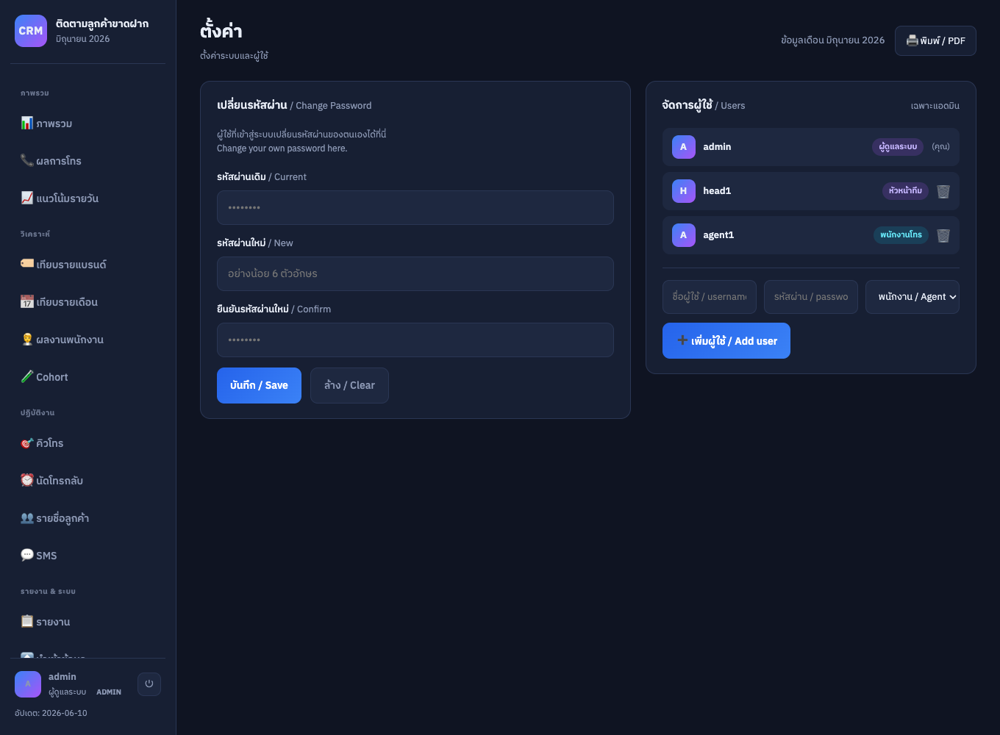
แก้ 2 จุดที่ CSV + Excel ภาษาไทยมักพังเสมอ: (1) ใส่ BOM EF BB BF นำหน้าไฟล์ Excel จึงตีความเป็น UTF-8 ภาษาไทยไม่กลายเป็นตัวต่างดาว · (2) เบอร์โทรเก็บเป็น "ข้อความ" ตลอด ไม่เคยถูกแปลงเป็นตัวเลข เลข 0 นำหน้าจึงไม่หาย
ใส่ quote แบบ RFC 4180 เฉพาะช่องที่มี , " \n และคอลัมน์ทั้ง 17 ตรงกับฟอร์แมต "นำเข้า" เป๊ะ → export แล้ว import กลับได้ครบ 100% ใช้เป็นไฟล์สำรองข้อมูลได้ในตัว
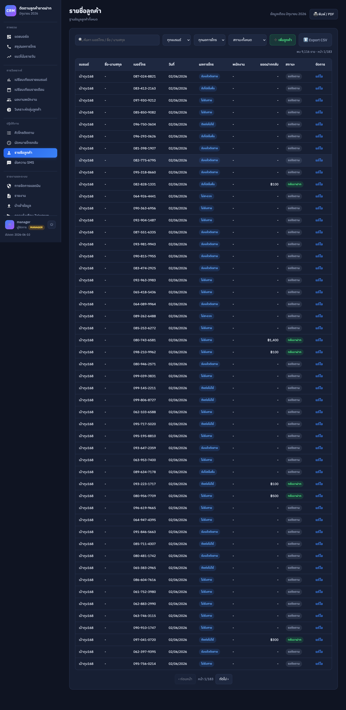
ตรรกะคือ "AND ระหว่างกลุ่ม · OR ภายในกลุ่ม" — เลือกหลายผลในกลุ่มเดียวเอามาทั้งหมด (OR) แต่ต้องผ่านทุกกลุ่มถึงโผล่ (AND) ตรงกับที่คนคิดจริง: "ไม่รับสาย หรือ ติดต่อไม่ได้ และ ต้องเป็นแบรนด์มรกต"
"สถานะลูกค้า" ไม่ได้เก็บเป็นฟิลด์ แต่ถอดสดจากข้อมูล (ยอดฝาก>0 = คืนชีพ · มีวันนัด = มีนัด · ติ๊ก dnc = ห้ามโทร) พนักงานจึงไม่ต้องมานั่งกรอกสถานะเอง คิวสะท้อนความจริงให้อัตโนมัติ
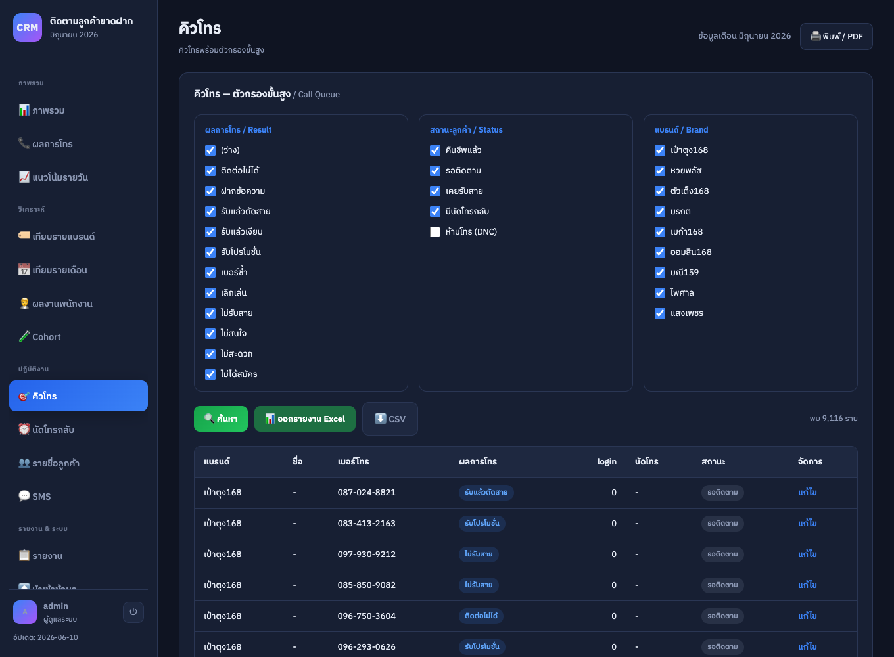
จัดกลุ่มจาก "วันที่โทรจริง" ในข้อมูล ไม่ใช่วันนำเข้า — สัปดาห์ตัดแบบเริ่มวันจันทร์ (คำนวณจากเลขวันในสัปดาห์) ให้ตรงรอบงานของทีม ส่วนเดือนจัดด้วย key ปี-เดือน
ROI ไม่ใช่ตัวเลขลอยๆ แต่ = ยอดฝากกลับ ÷ โบนัสที่จ่าย ตอบตรงว่าโบนัส 1 บาทดึงเงินฝากกลับมากี่บาท · รับสาย% = รับสาย ÷ โทรทั้งหมด คู่กับ ไม่รับ% รวมกันได้ 100% เป็นจุดตรวจความถูกต้องในตัว
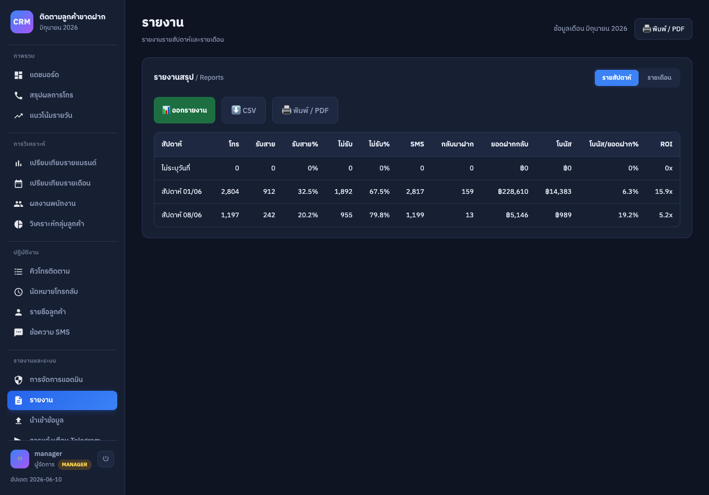
สร้างไฟล์ Excel โดยไม่พึ่งไลบรารีภายนอกเลย — เขียน <table> HTML แล้วส่งด้วย MIME application/vnd.ms-excel ซึ่ง Excel/Google Sheets เปิดได้เนทีฟ พร้อมหัวตารางจัดสีน้ำเงิน เลือกวิธีนี้เพราะเว็บเป็น static เปิดจากไฟล์ได้ทันทีไม่ต้องลงอะไร
ข้อแลกที่รู้ตัว: ได้ .xls แบบ HTML-table ไม่ใช่ .xlsx แท้ที่ฝังสูตรได้ — ถ้าต้องการสูตรจริงค่อยทำผ่านเซิร์ฟเวอร์ในเฟสถัดไป
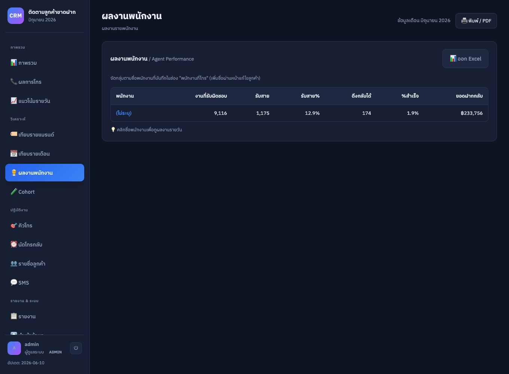
15/06/2026 → บันทึกเปลี่ยน "ช่องวันที่" ธรรมดาให้กลายเป็น รายการงานจริง — เรียงวันใกล้สุดขึ้นก่อน แล้วติดป้ายความเร่งด่วนด้วยสี (เลยกำหนด=แดง · ครบกำหนดวันนี้=ส้ม · ยังรอ=น้ำเงิน)
จุดที่คิดเผื่อ: ป้ายสถานะเทียบกับ "วันล่าสุดในชุดข้อมูล" ไม่ใช่วันนี้จริงของเครื่อง — เดโมที่รันบนข้อมูลย้อนหลังจึงยังเห็นป้ายถูกต้อง ไม่กลายเป็นเลยกำหนดทั้งหมด
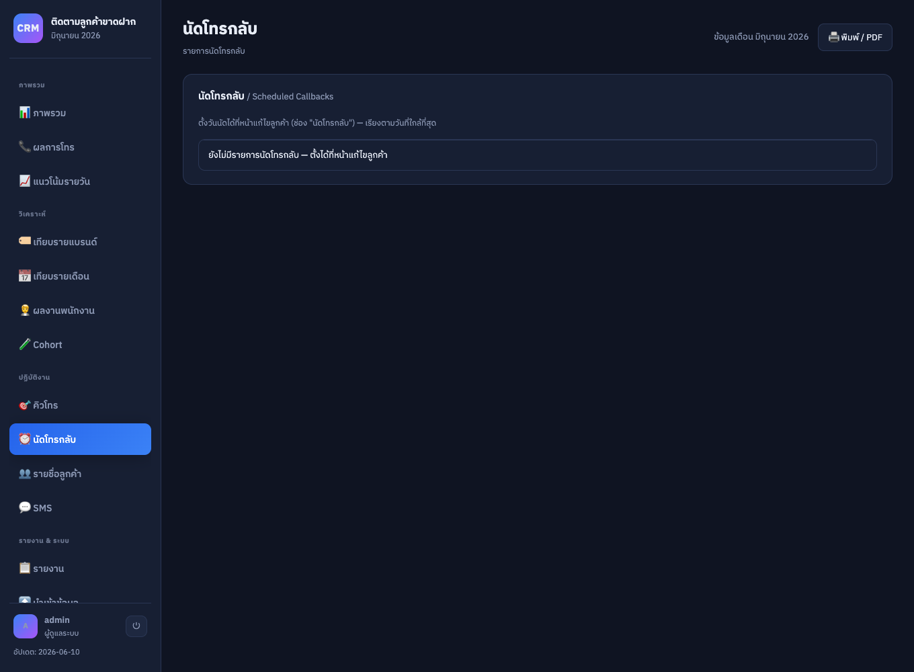
ออกแบบเชิง ความรับผิดชอบ / compliance — บังคับกรอกเหตุผลก่อนเซฟ (ปล่อยว่างไม่ได้) แล้วเขียนลง statusLog เป็นประวัติที่เก็บครบ ใคร/เมื่อไหร่/จากสถานะอะไรเป็นอะไร/เหตุผล จึงตอบได้เสมอว่าใครสั่งห้ามโทรเบอร์นี้และเพราะอะไร
การตัดออกจากคิวทำที่ ชั้นกรองคิว (queueFiltered) อัตโนมัติ ไม่ต้องลบลูกค้าทิ้ง กันโทรซ้ำโดยไม่ตั้งใจ + เด้งแจ้งหัวหน้าผ่าน Telegram ได้
จัดกลุ่มตามชื่อ "พนักงานที่โทร" แล้ววัดผลที่ผูกกับเงินจริง — "%สำเร็จ" = ลูกค้าที่ดึงกลับมาฝากได้ ÷ งานที่รับผิดชอบ ไม่ใช่แค่นับสายที่โทร จึงสะท้อนคนที่ "ปิดงานได้" ไม่ใช่แค่ "โทรเยอะ"
ซื่อตรงกับข้อมูล: ถ้ายังไม่มีการกรอกชื่อพนักงาน ระบบรวมเป็นกลุ่ม "(ไม่ระบุ)" ไม่สร้างชื่อปลอม — พอทีมเริ่มกรอกชื่อจริงก็แยกผลงานรายคนทันที
ตอบคำถามเงินที่ "อัตรากลับมาฝาก" เพียวๆ ซ่อนไว้ — เทียบกลุ่มได้โปร vs ไม่ได้โปร แล้วคิด "ฝากสุทธิหลังหักโบนัส" (ยอดฝาก − โบนัสที่จ่าย) เพราะโปรอาจทำให้คนกลับมาเยอะแต่ขาดทุนหลังหักของแถม ตัวเลขสุทธินี้คือบรรทัดที่ฟ้องว่าโปรคุ้มจริงไหม
แบ่ง cohort ตามสัปดาห์ที่ถูกโทร (ตัดวันจันทร์เหมือนหน้ารายงาน) + ไล่สี heat (เขียว≥3% · ส้ม≥1.5% · แดงต่ำกว่า) ให้กวาดตาเห็นกลุ่มที่เวิร์กทันที
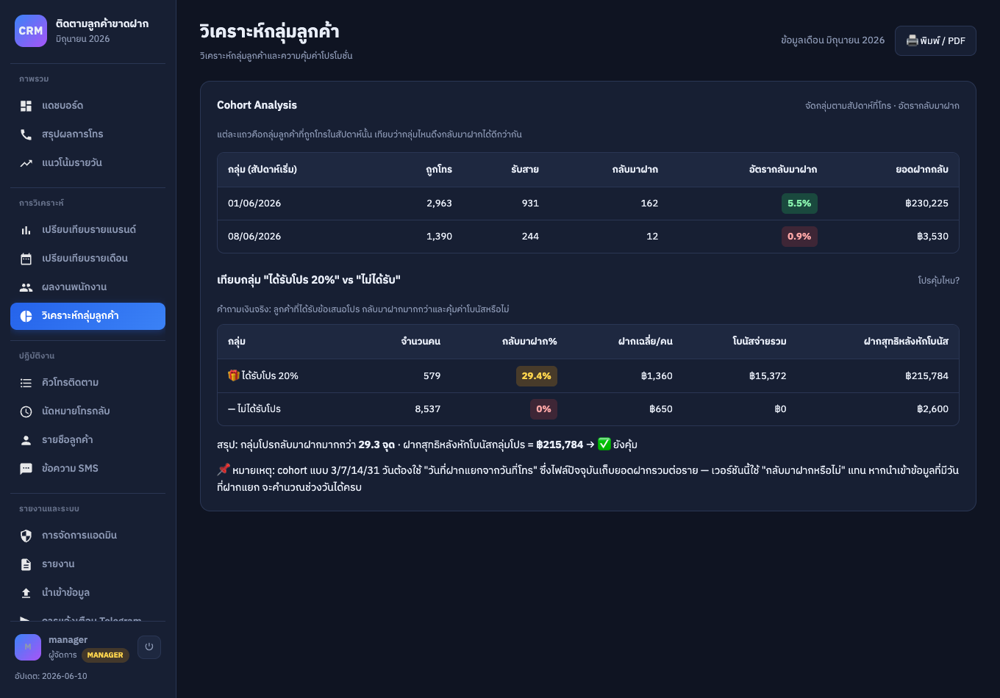
ในระบบที่หลายคนใช้ร่วมกัน คำถามที่ต้องตอบได้คือ "ใครแก้ / ใครลบรายการนี้" — ทุก action จึงต่อท้ายเป็น record {เวลา, ผู้ใช้, การกระทำ, รายละเอียด}
ค้นหาแบบ substring ไม่สนตัวพิมพ์เล็กใหญ่ครอบทุกฟิลด์ และจำกัดเพดานที่ 1000 รายการล่าสุด กัน localStorage บวมไม่จำกัด
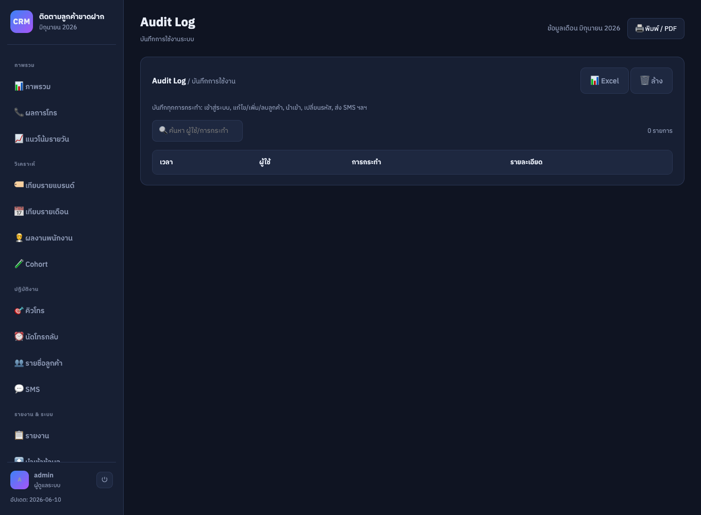
{name} {brand} {phone} แทนค่าอัตโนมัติแทนค่าตัวแปร ({ชื่อ}/{เว็บ}/{เบอร์} รับทั้งรูปไทยและ {name}{brand}{phone}) เป็นรายคน แล้วโชว์ตัวอย่างข้อความจริง + จำนวนผู้รับก่อนส่ง ลดความเสี่ยงเทมเพลตผิดหลุดออกไปทีละพันคน
จุดสำคัญด้าน compliance: การคัดผู้รับ "ตัด DNC ออกทุกกลุ่ม" บังคับที่ชั้นเลือกผู้รับ (audience) เบอร์ห้ามโทรจึงไม่มีทางหลุดเข้า blast
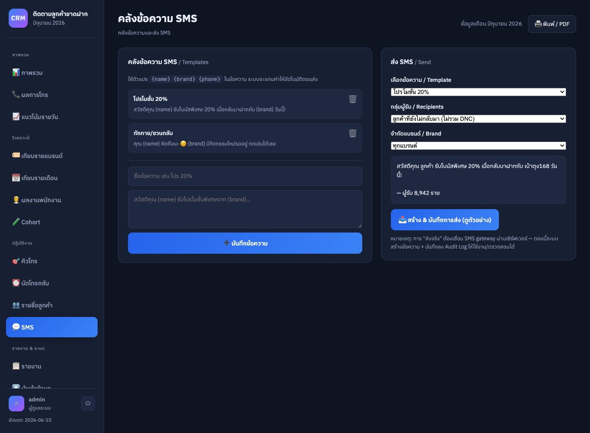
แยกปลายทาง 2 กลุ่ม (ทีม/หัวหน้า) + toggle เปิดปิดรายประเภท เพื่อกัน "alert fatigue" คนรับเฉพาะเรื่องที่เกี่ยวกับตัว · เบอร์ลูกค้าถูก mask เป็น 081-xxx-1234 ก่อนส่งเข้ากลุ่มแชต รักษาความเป็นส่วนตัว
จุดสำคัญสุด: ทุกการส่งห่อด้วย try/catch — Telegram ล่มหรือ Token ผิดจะแค่ warn ไม่ทำให้การบันทึกลูกค้า/งานหลักพัง (แจ้งเตือนเป็น best-effort ไม่ใช่ critical path) · สรุปรายวัน/สัปดาห์ใช้ปุ่มกดแทน cron เพราะ static web ไม่มีตัวตั้งเวลาฝั่งเซิร์ฟเวอร์
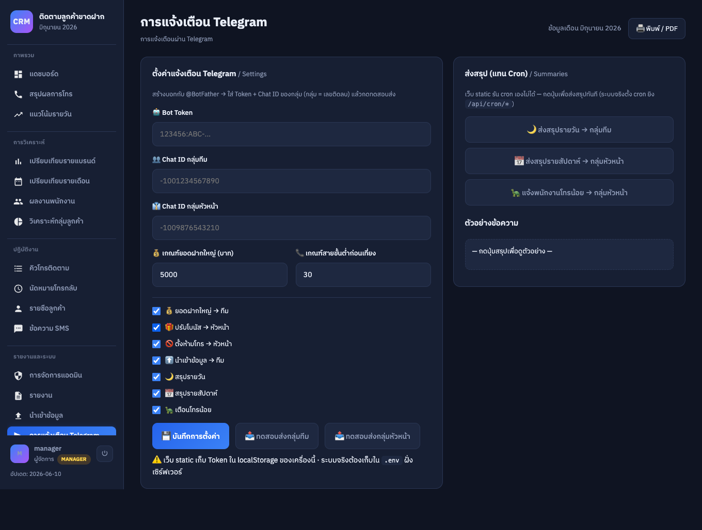
.env ฝั่งเซิร์ฟเวอร์ + ตั้ง cron ยิง /api/cron/* ตามไฟล์การบ้านวันนี้ / 7 วัน / เดือนนี้ / ทั้งหมด / กำหนดเอง — กรองทั้งแดชบอร์ดตามช่วงวัน พร้อมตัวเลขลูกค้าในช่วง
เพิ่มแถบสัดส่วน % ของยอดรวมในตาราง ดูเข้าใจง่ายขึ้น เรียงลำดับได้
พื้นที่ไล่สี + จุดสูงสุด + เส้นเฉลี่ยเคลื่อนที่ 7 วัน + สลับเมตริก ยอดฝาก/จำนวนคืนชีพ
การ์ดสรุปต่อเดือน + ตารางเทียบ + Δ เปอร์เซ็นต์ขึ้น/ลง
ช่องค้นหาเดียวค้นได้ทั้ง เบอร์โทร / ชื่อ / นามสกุล
แบ่งเมนูเป็นหมวด (ภาพรวม/วิเคราะห์/ปฏิบัติงาน/ระบบ) + ปุ่มพิมพ์ทุกหน้า
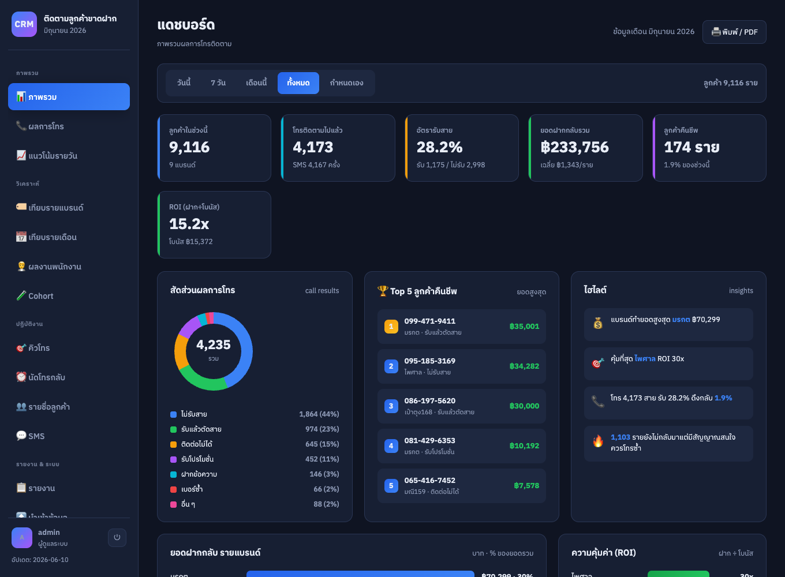
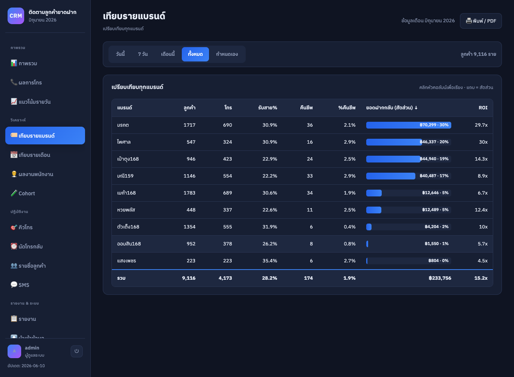
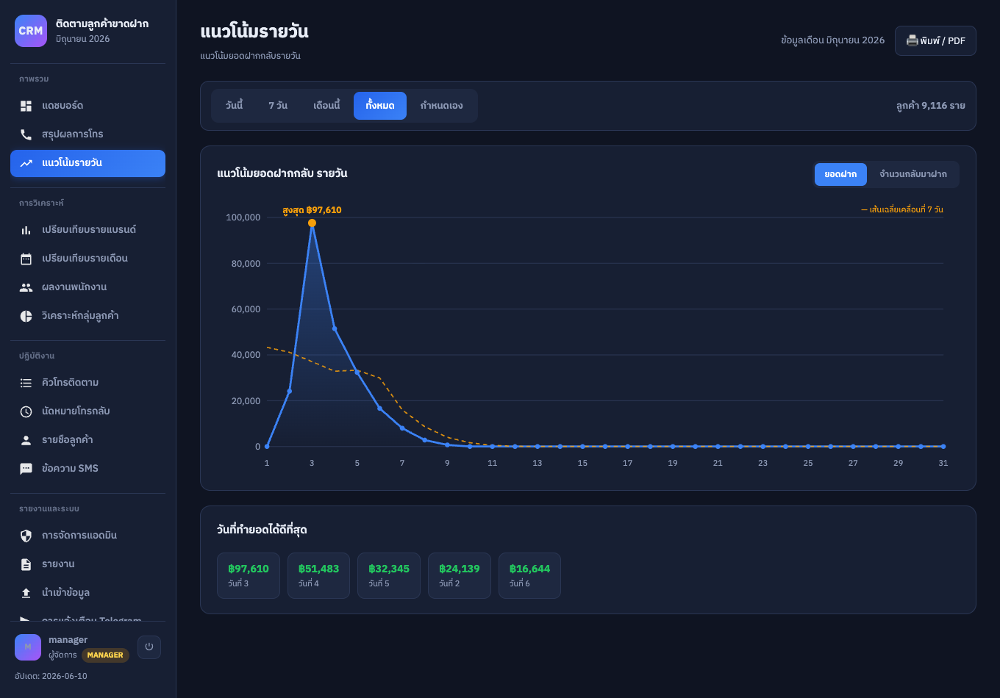
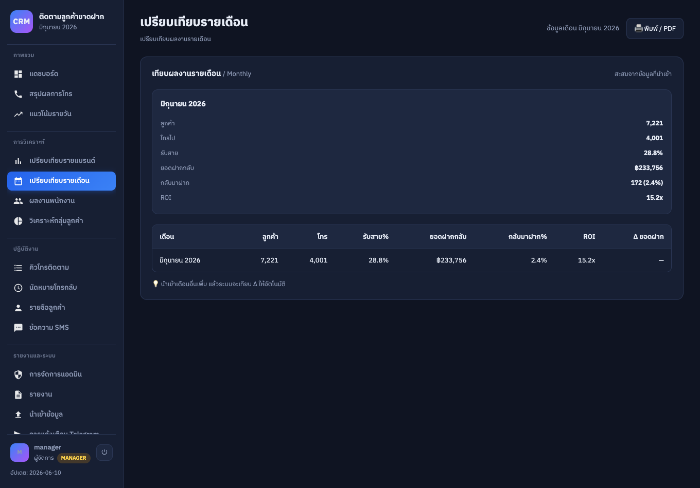